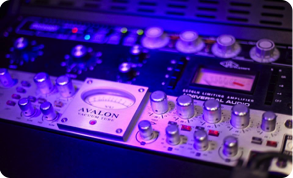
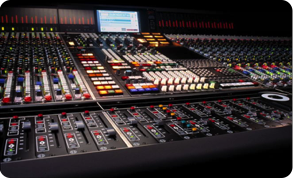

Studio



Aussi exigeants que nos artistes, nous avons choisi un matériel de qualité professionelle afin d'obtenir le meilleur.
Nous disposons d'une Station audionumérique qui est le coeur même de notre studio, conversion AD/DA allant jusqu'à 192khz.
Un mélange hardware/software sculptera et finalisera vos arrangements avant l'étape mixage et mastering.
Matériel disponible chez KASOUNDPROD